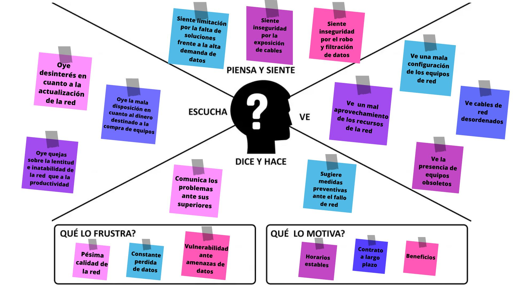

Mapa de Empatia
Es una herramienta utilizada en el ámbito de la investigación de usuarios para comprender mejor las necesidades, deseos, motivaciones y experiencias de un grupo objetivo específico.
El mapa de empatía se representa gráficamente como un cuadro dividido en secciones que representan diferentes aspectos del usuario. Estas secciones generalmente incluyen:
- ¿Qué ve?: Aquí se describen los aspectos visibles del entorno del usuario, como el entorno físico, las personas con las que interactúa y los objetos que utiliza.
- ¿Qué oye?: Esta sección se enfoca en lo que el usuario escucha en su entorno, como conversaciones, sonidos, mensajes o influencias externas.
- ¿Qué dice y hace?: En esta sección se exploran las acciones y palabras del usuario. ¿Qué dice en público? ¿Qué hace en su vida diaria? Esto ayuda a comprender su comportamiento y actitudes.
- ¿Qué piensa y siente?: Aquí se capturan los pensamientos y emociones internas del usuario. ¿Cuáles son sus creencias, opiniones, miedos, esperanzas y deseos?
- ¿Cuáles son sus frustraciones?: Esta sección se centra en las dificultades y frustraciones que enfrenta el usuario en relación con el problema o necesidad que se está investigando.
- ¿Cuáles son sus motivaciones?: Aquí se identifican las motivaciones básicas y emocionales del usuario que son satisfechas por el producto, servicio o solución en particular.
